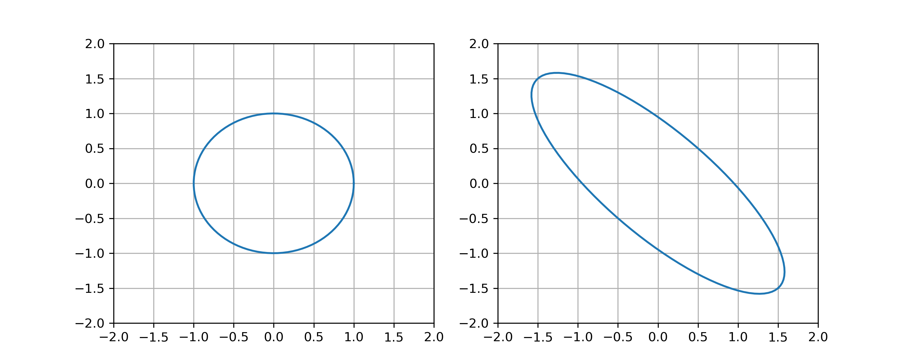

Error Analysis
Contents
Error Analysis#
The condition number of a nonsingular matrix \(A\) is \(\mathrm{cond}(A) = \| A \| \| A^{-1} \|\). Given a linear system \(A \boldsymbol{x} = \boldsymbol{b}\), the condition number of \(A\) quantifies how sensitive the solution \(\boldsymbol{x}\) is relative to changes in \(\boldsymbol{b}\).
Matrix Norm#
The norm of a vector \(\boldsymbol{x} \in \mathbb{R}^n\) is given by
The vector norm \(\| \cdot \|\) satisfies the following properties.
\(\| \boldsymbol{x} \| \geq 0\) for all \(\boldsymbol{x} \in \mathbb{R}^n\)
\(\| \boldsymbol{x} \| = 0\) if and only if \(\boldsymbol{x} = \boldsymbol{0}\)
\(\| c \boldsymbol{x} \| = |c| \| \boldsymbol{x} \|\) for any \(c \in \mathbb{R}\) and \(\boldsymbol{x} \in \mathbb{R}^n\)
\(\| \boldsymbol{x} + \boldsymbol{y} \| \leq \| \boldsymbol{x} \| + \| \boldsymbol{y} \|\) for all \(\boldsymbol{x} , \boldsymbol{y} \in \mathbb{R}^n\)
Condition 4 is called the triangle inequality. See Wikipedia:Norm.
The norm of a matrix \(A\) is
The matrix norm is also called the operator norm.
Let \(A\) be a nonsingular matrix. Then
In other words, \(\| A \|\) is the maximum stretch of a unit vector by the linear transformation \(A\), and \(\| A^{-1} \|\) is the reciprocal of the minimum stretch of a unit vector by the linear transformation \(A\).
Proof. Note that \(\| A \boldsymbol{x} \| / \| \boldsymbol{x} \|= \| A ( \boldsymbol{x} / \| \boldsymbol{x} \| ) \|\) therefore
Similarly, we can rearrange the definition of \(\| A^{-1} \|\) to find:
Let \(D\) be a diagonal matrix and let \(\boldsymbol{d}\) be the vector of diagonal entries of \(D\):
Then \(\| D \| = \max \{ |d_1| , \dots, |d_n| \}\).
Proof. Compute
How do we compute the matrix norm \(\| A \|\) for a general matrix? This is a nontrivial problem and we will see later how to use the singular values of \(A\) to determine the matrix norm.
The matrix norm satisfies the properties:
\(\| A \| > 0\) for all \(A \not= 0\)
\(\| A \| = 0\) if and only \(A = 0\)
\(\| c A \| = |c| \| A \|\) for any \(c \in \mathbb{R}\)
\(\| A + B \| \leq \| A \| + \| B \|\)
\(\| A B \| \leq \| A \| \| B \|\) (if \(A\) and \(B\) are square matrices)
\(\| A \boldsymbol{x} \| \leq \| A \| \| \boldsymbol{x} \|\) for any \(\boldsymbol{x} \in \mathbb{R}^n\)
Condition Number#
The condition number of a nonsingular square matrix \(A\) is
By convention, we define \(\mathrm{cond}(A) = \infty\) if \(\det(A) = 0\).
If \(A\) is nonsingular, we have
The image below shows the unit circle and its image under the linear transformation defined by a \(2 \times 2\) matrix \(A\). Determine \(\| A \|\), \(\| A^{-1} \|\) and \(\mathrm{cond}(A)\).

Observe the maximum stretch of a unit vector is \(\| A \| = 3 / \sqrt{2}\), the minimum stretch is \(1/\sqrt{2}\) therefore \(\| A^{-1} \| = \sqrt{2}\) and the condition number is \(\mathrm{cond}(A) = 3\).
Relative Errors#
Let \(A\) be a nonsingular matrix and consider the linear system \(A \boldsymbol{x} = \boldsymbol{b}\). If a small change \(\Delta \boldsymbol{b}\) corresponds to a change \(\Delta \boldsymbol{x}\) in the sense that \(A(\boldsymbol{x} + \Delta \boldsymbol{x}) = \boldsymbol{b} + \Delta \boldsymbol{b}\), then
Proof. Since \(A \boldsymbol{x} = \boldsymbol{b}\), we have \(\Delta x = A^{-1} \Delta \boldsymbol{b}\). Computing norms we find
Given a vector \(\boldsymbol{b}\) and small change \(\Delta \boldsymbol{b}\), the relative change (or relative error) is
The error bound
implies that if \(A\) has a large condition number then small changes in \(\boldsymbol{b}\) may result in very large changes in the solution \(\boldsymbol{x}\). In other words, the solution \(\boldsymbol{x}\) is sensitive to errors in \(\Delta \boldsymbol{b}\).
Exercises#
Exercise 1. Determine whether the statement is True or False: If \(\| A \| = 1\) then \(A = I\).
Exercise 2. Suppose \(A\) is a 2 by 2 matrix such that the image of the unit circle under the linear transformation \(A\) is:

Determine \(\mathrm{cond}(A)\).